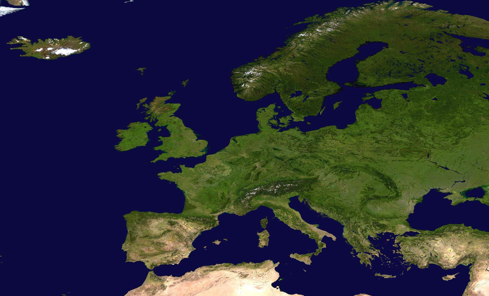

|  | EUROPA |
Europa es un continente situado principalmente en el hemisferio norte, limitado al oeste por el océano Atlántico, al norte por el Ártico, al este por Asia y al sur por el mar Mediterráneo. Este continente es cuna de algunas de las civilizaciones más influyentes de la historia, incluyendo a los antiguos griegos, romanos y egipcios. Europa es conocida por su rica herencia cultural, con una influencia duradera en la filosofía, la música clásica, la literatura y el arte. Países como Francia, Alemania, Italia y España han sido líderes en estos campos a lo largo de los siglos. Además, Europa es famosa por su arquitectura histórica, con ciudades icónicas como París, Roma, Atenas y Praga. La Unión Europea (UE) es una organización política y económica que incluye a numerosos países europeos y busca promover la cooperación y la integración económica en la región. Europa también ha experimentado importantes cambios geopolíticos en las últimas décadas, con la caída del Muro de Berlín y la expansión de la UE hacia el este. |
|